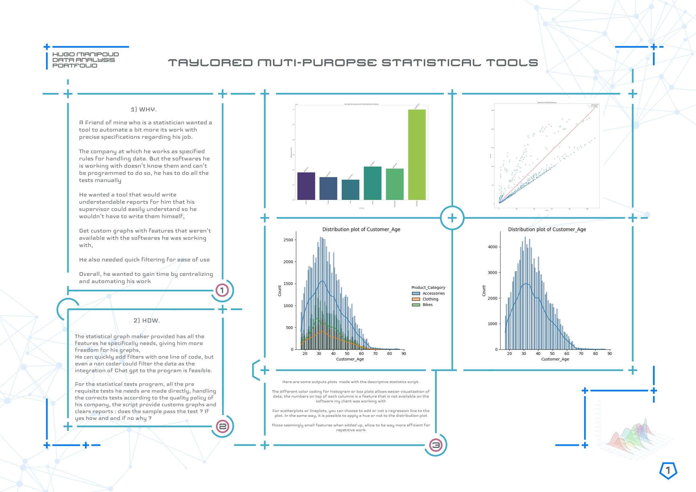
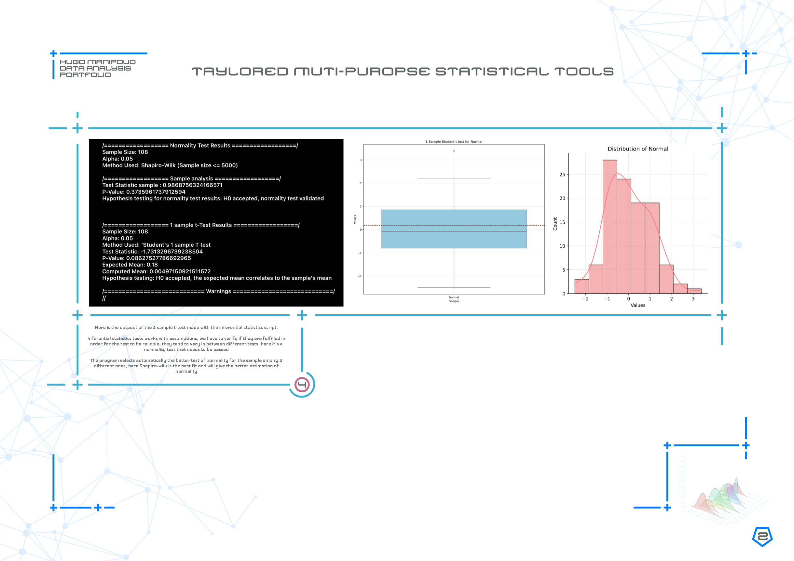
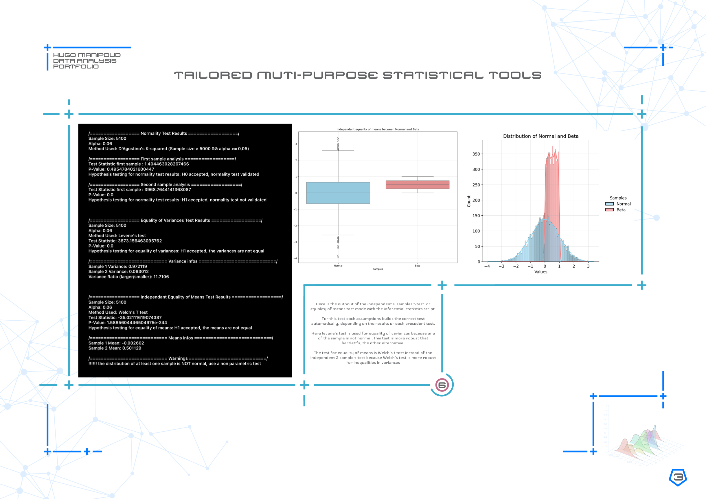
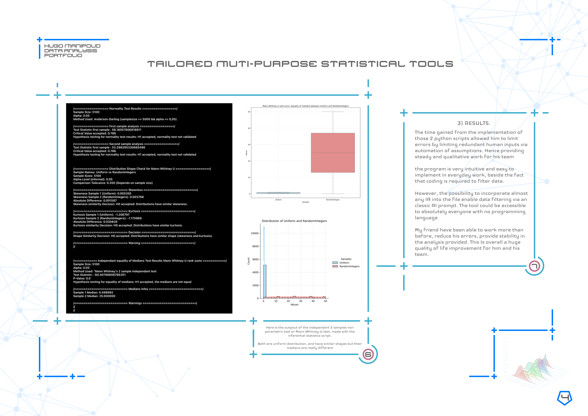
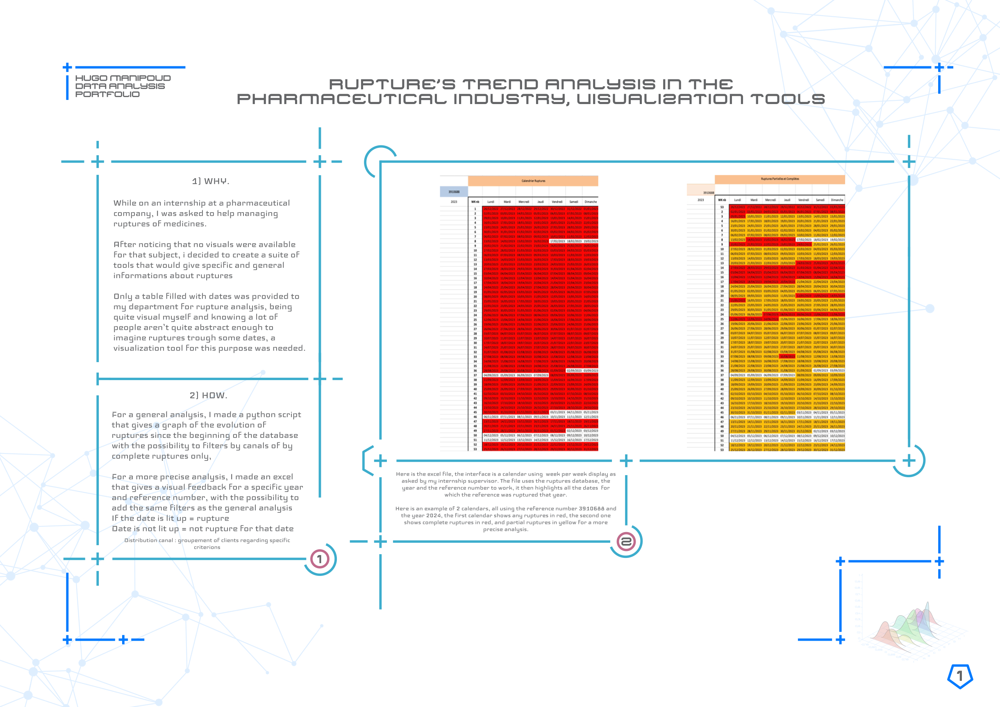
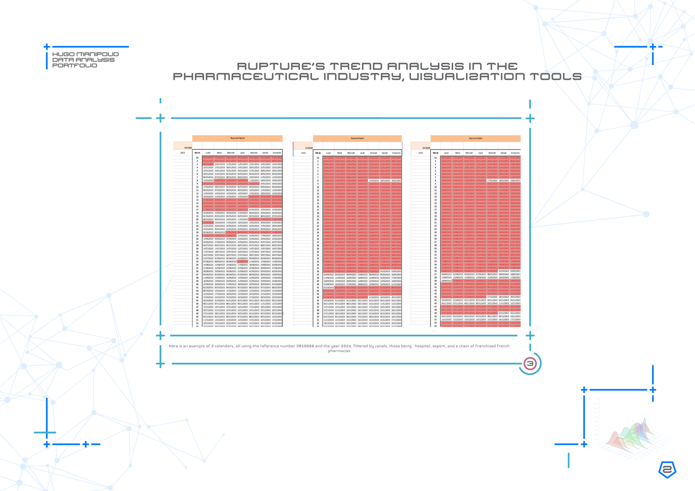
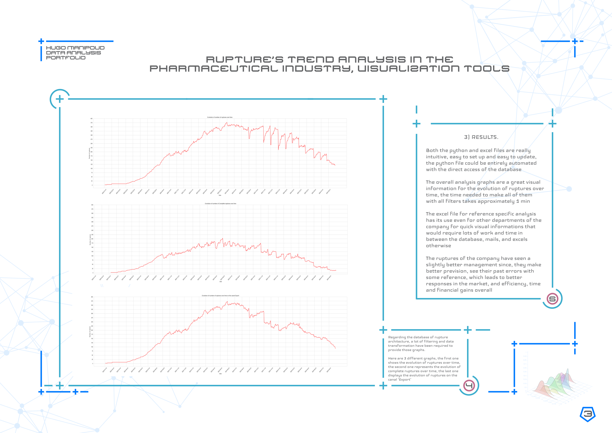
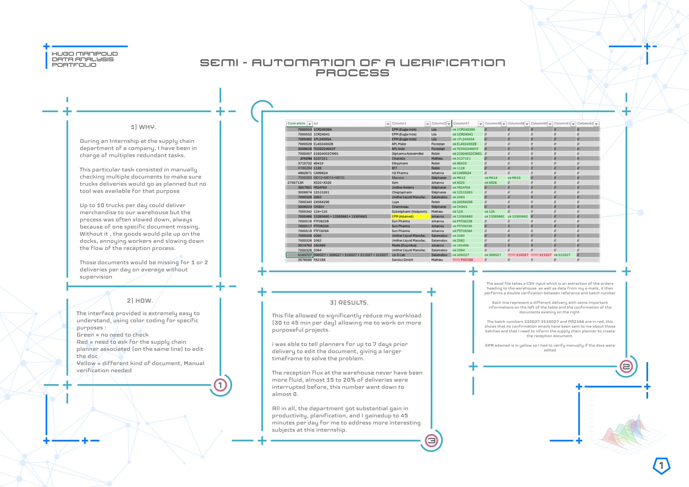

Hugo Manipoud's Data analysis portfolio
First Project : Descriptive and inferential statistics
   
Second Project : Rupture Trend analysis tools
  
Third Project : Semi automation for a verification process
